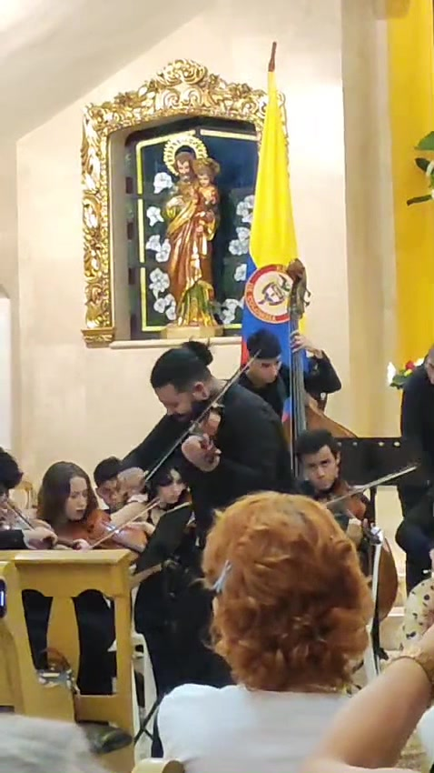
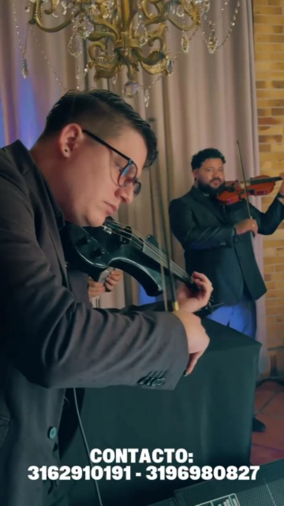
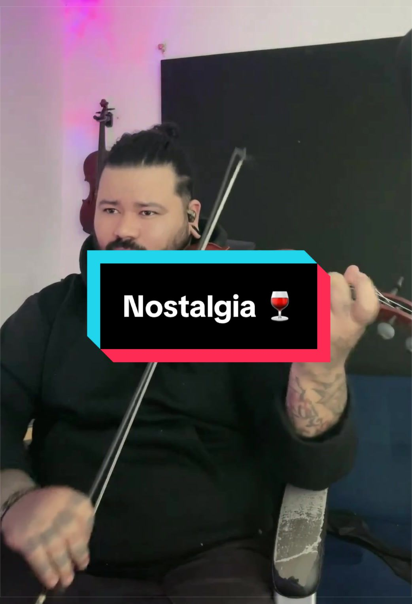

Bodas
De la entrada al vals: música que abraza cada momento del día.
- Ceremonia religiosa o civil
- Cóctel y recepción
- Vals y canciones especiales
Violín en vivo · Cúcuta, Colombia
Soy Enmanuel Bastidas, violinista formado en El Sistema de Venezuela. Toco en bodas, serenatas y eventos que merecen recordarse para siempre.
Aparece en: La Opinión Noticias Caracol El Estímulo

Servicios
Cuatro maneras de darle violín a tu momento. Cotización gratuita y sin compromiso por WhatsApp.
De la entrada al vals: música que abraza cada momento del día.
Aniversarios, pedidas de mano y "te quiero" que se tocan en vez de decirse.
Cumpleaños, graduaciones y aniversarios con alma de concierto.
Inauguraciones, cenas y cócteles con elegancia de primera.
Showreel
Covers, directos y presentaciones: así suena un violín que ama lo que hace.

Dúo de violines · En vivo en Cúcuta

Nostalgia tango · Directo en vivo
Clientes y escenarios
Prensa, escenarios e instituciones que ya viven la música de Enmanuel.
«Un talento sin fronteras que sorprende con su música.»Noticias Caracol
«El violín solista estará a cargo de Enmanuel Bastidas, joven violinista venezolano.»La Opinión · Las Cuatro Estaciones, Teatro Zulima
«Cada noche deleita con los acordes de su violín.»El Estímulo
Fácil, así
Cuéntame tu evento, la fecha y el lugar. Respondo personalmente cada mensaje.
Repertorio a tu medida: clásico, pop, tango o tus canciones favoritas.
Llego puntual, con mi violín y con la mejor actitud para tu momento.
Cotización gratuita y sin compromiso. Cuéntame tu idea y la hacemos música.
Agenda por WhatsAppCúcuta y la frontera · Eventos privados y corporativos